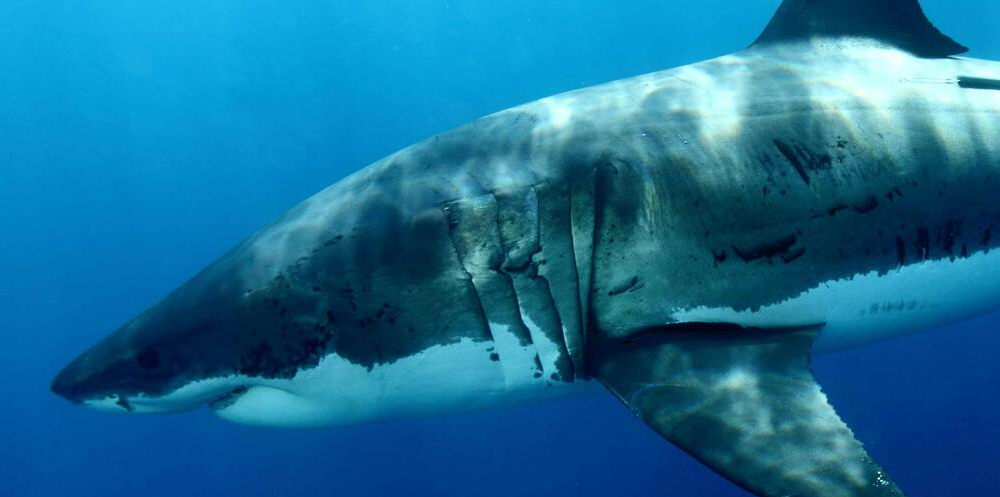
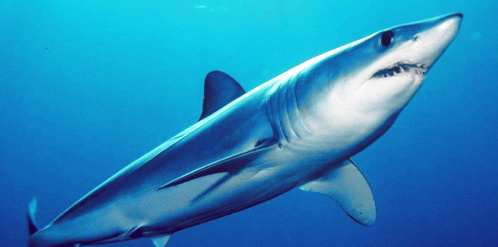

Whale sharks are the largest species of shark currently alive in the world. They are found in all of the tropical
oceans of the world. They feed on plankton and travel extremely long distances in order to find enough food and to reproduce.
While the maximum size of the whale shark is not known, they have been seen as large as 20m. The main cause of whale shark
endangerment is due to the fact that they are highly valued on the international meat market. They are extremely overfished in
order to harvest their meat and fins. Whale shark tourism also disrupts the population as it can interrupt their feeding
and sharks have a chance of being injured by boats and humans. Currently the WWF is studying whale shark habits and tagging whale
sharaks in order to set up greater protection measures for them. The WWF is also helping out with shark tourism by educating people
and companies on how to safely conduct tourism without affecting the sharks or their habitats.

Great White Shark
Vulnerable

Shortfin Mako Shark
Endangered